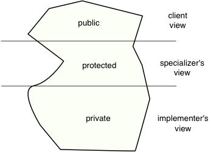

Good modular design has the property that clients don't need to see much of the code they are using. They can rely on the specification. Good code is like an iceberg, with most of the code hidden below the water, where only implementers need to look. In an OO language, there are actually two kinds of implementers, with two different views of the code: the implementers of the class, and the implementers of subclasses, who we will call specializers.
Our goal for documenting the implementation of a module is to support implementation and maintenance by describing implementation methods and even abstracting them. Therefore, private method specifications have the same clauses as specifications for public methods.
We also want to write specifications for instance variables where it is not obvious. Two kinds of information are essential:
Examples of instance variable specifications, including class invariants:
class LinkedList{ /** First node. May be null when list is empty. */ Node first; /** The number of nodes in the list. size ≥ 0. */ int size; /** Last node. last.next = null. May be null when list is empty. */ Node last; ...
When we write methods like LinkedList.add, these invariants may be temporarily
broken:
/** Append x to the end of the list. */
void add(T x) {
// Algorithm: Create a new node. Make it the new head of the list
// if the list is empty. Otherwise attach it to "last".
if (first == null) {
first = last = new Node(x, null); // size invariant broken here
} else {
last = last.next = new Node(x, null); // size invariant broken
}
size++; // invariant restored here
}
Just as with preconditions and postconditions, it is useful to have some
default expectations for class invariants, in order to keep the documentation
clear and concise. In particular, most class fields are typically required to
be non-null in order to satisfy the class invariant. Stating this condition
explicitly for each field is tiresome and clutters the code, so it is better to
follow the convention that the class invariant requires all instance variables
to be be non-null, unless it is explicitly documented otherwise, as in the case
of the instance variables first and last, above.
The specializer uses the code as a superclass with the goal of
producing a subclass that reuses, exploits, extends, or specializes superclass functionality.
The specializer may override the behavior of superclass methods that have
public or protected visibility, but may call those methods using super.
When we write a specification for a method that can be overridden, there are really two separate goals:
For example, consider an implementation of an extensible chess game.
We might define a class Piece that gives an interface for
manipulating pieces, with subclasses such as King that specialize
it:
/** A chess piece */
abstract class Piece {
/** Spec: Iterates over all the legal moves for this piece.
* Overridable: uses legalDestinations() to construct the legal moves.
*/
public Iterable<Move> legalMoves() { ... }
/**
* Iterates over all destinations this piece can move to in an ordinary
* move, including captures.
*/
abstract protected Iterable<Location> legalDestinations();
}
Given this specification for Piece, we can implement a piece such as
a king with extra castling moves that are not computed from the legal
destinations as with other pieces:
class King extends Piece {
public Iterable<Move> legalMoves() {
Collection<Move> moves = ...;
for (Move m : super.legalMoves()) { // rely on superclass overridable behavior
moves.add(m);
}
moves.add(new CastleMove(...));
return moves;
}
/** Overridable behavior: iterate over the squares adjacent
* to the current location. */
public Iterable<Location> legalDestinations() { ... }
}
Note that King.legalMoves obeys the specification of
Piece.legalMoves, but overrides its behavior. Because the
implementer of Piece defined overridable behavior of the method, the
implementer of King can rely on this behavior in implementing their
own method without needing to read the details of the implementation
of Piece.legalMoves.
Writing classes that can be inherited and reused effectively requires keeping these two different kinds of specification separate.
We want our implementations to be usable in a modular way, even and especially as implementations evolve. To achieve modularity, everyone—both clients and specializers—should be able to rely on the contracts expressed by the specifications.
One implication of obeying contracts is that when subclasses override behavior, the new behavior they provide should still be compatible with the existing specifications. In other words, it should be possible to substitute an object of a subclass for an object of a type that it is subtype of, not only without violating type safety, but also without violating the specifications of the supertype. In other words, inheritance needs to be used in a way that preserves behavioral subtyping.
Behavioral subtyping is another reason why it is useful to distinguish between the specification provided by the specialization interface—which subclasses need not obey—and the (in general, more flexible) public specification that all subclasses of the interface or classes must obey. Subclasses can rely on the stronger spec provided by specialization interface, but most clients can only rely on the weaker public specification. The specialization interface of a class can only be used safely by code that ``knows'' the exact class it is using. But this knowledge implies tighter coupling than is usually desirable.
We have discussed how to pick operations for modules and how to specify those operations. Moving to a higher level, it will be helpful to have methods for planning how we are going to partition a programming effort into modules or even into larger units like groups of modules.
The Module Dependency Diagram (MDD) is one tool that helps with planning and communicating design at the larger scale. The idea is that the modular design has a structure that comes out when we look at how modules depend on each other. In an OO language, modules are classes and, to some extent, packages.
There are two ways that classes depend on each other: first, by referring to each other, which we consider to be a "depends on" relationship, and second, by inheritance, which is a specialized dependency, a "subclass of" relationship. We can illustrate these two kinds of relationships with arrows:
For example, consider Assignment 2. The MDD of one reasonable implementation of this assignment is something like the following:

Notice that the subclass hierarchies appear as parts of the MDD, albeit upside-down from the usual way that we draw them, so that superclasses and interfaces appear at the bottom of the diagram rather than the top.
Drawing the MDD can help us diagnose the quality of a design and plan its implementation. We can tell which modules are important to the overall design, because they have a lot of incoming arrows or can be reached from many modules by following arrows through the MDD. We can also tell which modules are more likely to break, because they have many outgoing arrows or can reach many other modules by following arrows.
A good design tends to lead to a clean-looking MDD, because the dependencies of different modules are easy to understand. A good design in which modules are loosely coupled tends to look like a tree or an acyclic graph (a graph without cycles). Cycles in the graph are a danger sign. For example, two modules that depend on each other are intimately tied to one another, because changes to either one will tend to propagate to the other, and perhaps back! A messy MDD that looks like spaghetti probably means we should rethink how we have divided up the tasks among modules. Often the problem is that modules are mixing concerns, and code that has ended up in some module ought to be moved to a different module. The dependency arrows in the MDD can show us the direction in which code ought to move.
The MDD also helps us plan how to implement code. There are two basic ways to go about implementing: top-down and bottom-up.
Top-down: Here we start at the top of the MDD (i.e., the main program) and work our way down, implementing clients before the modules on which they depend. Top-down development helps us get high-level design decisions right early on and to understand user needs. The program is always in a demoable and testable state as long as we write stub or mock implementations of the missing pieces of the code. With top-down development, we can do system testing in which the whole system is being tested at once, and modulo any functionality not yet implemented in stubs, we can test as we develop.
Bottom-up: As the name suggests, we implement modules before the clients that depend on them. Bottom-up development has the advantage that, assuming we are testing as we go, we are also building upon solid, fully implemented foundations. As we implement each module, we can immediately test it with unit tests designed for that module. Since the top levels of the program are not present, we test instead using a test harness for each module. The test harness contains that module's unit tests. Bottom-up development is particularly effective when it is not clear whether key parts of the system can be implemented with acceptable performance.
Which implementation strategy is better? It depends on what we are trying to build. Typically, we want to reduce the risk that we will do extra work, by discarding code or by setting up a structure in which the desired functionality is difficult to implement. Top-down development is helpful for reducing the risk that the customer needs are not going to be met, or that the high-level structure of the program is not going to work out. Bottom-up development reduces the risk that core technologies will be infeasible, potentially requiring a redesign of all of the modules depending on them.
In practice, we often want to use both styles of design at once, depending on our assessment of where the main risks lie. Before implementing a program, especially when working on a team, it is a good idea to decide on the MDD and come up with an implementation strategy that addresses the risks effectively through a mixture of top-down and bottom-up development. The implementation strategy should include any stubs or test harnesses needed to test the code as it is being developed. After sketching the MDD, the team should design the interfaces that define the boundaries between different modules. Good interface design and clear specs are especially important at the boundaries where different programmers will interact.
It is tempting to defer testing, like documentation, to fairly late in the software development process. For example, in the waterfall model of development, testing is used for the validation step occurring late in the process:
While the steps of the waterfall model are all real tasks that must be done, in practice each phase cannot be complete before the next one begins. Each phase can influence the ones that come before it in the model. The waterfall model was actually originally proposed as a straw man that developers should not follow, but it has had serious proponents. At this point it is generally understood as an example of how not to do development.
Perhaps the most problematic aspect of the waterfall model is that it appears to defer all validation to the end. However, code that hasn't been tested should be assumed to be broken; waiting until development is finished to start testing is a recipe for disaster. Note that by validation, we mean any process that increases our confidence in the correctness of the system; it can include both testing and formal verification. Testing is the validation process used most in practice. In our discussion of loop invariants, we've also gotten a taste of formal verification, where the goal is a rigorous mathematical argument that code works correctly on all inputs.
The time to test is before, during, and after implementation. We can even start working on testing before we have started implementing code. This helps because the process of designing tests for the system already identifies design flaws. Early testing not only tests the code, it tests the specifications and even the tests themselves. Failed tests may fail because the tests themselves are wrong! When you're debugging your code, it's very useful to be able to rely on the tests being right.
The key to success is continuous testing throughout the development process. As each feature is added or module is implemented, test cases should be developed to validate the implementation work done. With continuous testing, new bugs that are discovered will tend to be found in recently written code, helping you localize the error. Continuous testing works particularly well when code contains assertions to check preconditions, postconditions, and invariants.
Code modifications often introduce new bugs, even breaking working functionality. And it's not just modifications that add new functionality. In fact, studies of software development have shown that roughly 1/3 of all bug fixes introduce new bugs.
Regression testing helps address this problem. A test suite containing tests that cover the functionality of the program is developed; these tests can then be run to make sure that working features of the code have not "regressed". For regression testing to be effective, it should be as automatic and easy to invoke as possible—a "push-button" process. Many software organizations even include regression testing as a standard part of the software build process, preventing developers from pushing changes to the code repository if regression tests fails. The time invested in automating regression tests is time well spent for even moderate-sized projects.
The test suites associated with a software project are tremendously valuable. Like code documentation, they are part of the code of the project and should be curated and maintained with equal care. It is tempting to take shortcuts with testing code because it isn't shipped to the customer; this would be a mistake.
Why do programmers write code with so many bugs? One important reason is the excessive use of copying and pasting code. Copying and pasting buggy code automatically duplicates all the bugs. Furthermore, programmers frequently fail to completely adapt the copied code to the new setting where it is being pasted. In fact, one recently popular way to find bugs in programs is to automatically search for code that appears to be copied and pasted, but where the pasted version has not been consistently adapted to its new context.
Copying and pasting code is one of those “lazy shortcuts” that creates more work in the long run. When you feel the need to copy code, try instead to introduce an abstraction (a class, a method) that captures the functionality that you are copying. You might have to think a little harder, but your code will typically be shorter and better, and you'll save time in the end.
For most programs, the number of possible inputs is staggeringly huge. For example, a program that accepts two ints as its inputs already has \(2^{64}\) possible inputs. We won't be able to test the program on all these inputs in a reasonable amount of time. Exhaustive testing is infeasible. Therefore, testing is by nature a finite approximation of exhaustive testing. How can we perform a relatively small, finite number of tests, and nevertheless gain confidence that the program works in all situations? This is the problem of achieving coverage. There are several good strategies for achieving meaningful coverage.
In black-box testing, we design test cases by looking at the spec rather than the code. We design test cases that not only include "typical cases" but also edge and corner cases that (from the spec) we can see are atypical in one way or another. Because we are designing test cases without looking at the implementation, we can even design black-box test cases before the implementation is written. In fact, writing black-box test cases also helps get the specs right, because thinking about testing helps us realize when specs are incomplete or ambiguous. Developing tests early also leads to a better implementation because it causes us to think more deeply about what will happen in corner cases.
Let's consider an example of developing black-box tests.
Suppose we are testing the remove operation of
a linked list implementation. We would want to test some "typical" cases
in which the element is in the list, but also some corner cases:
Black-box testing requires the programmer to define input/output pairs, in which the correct output corresponding to each input is defined. This can be a time-consuming process.
In glass-box testing we design test cases based on the implementation code. The goal is achieve coverage of all the ways the code can behave, under the reasonable assumption that any untested functionality in the code could hide a bug.
At a minimum, glass-box testing requires that we test every method. But we should go even further to obtain higher assurance:
In general it is infeasible to take every path through the code in a finite set of test cases, because even a single loop defines an infinite number of paths depending on how many times the loop repeats. Here we can fall back on the strategy of sampling the space intelligently. We test both the "typical" case in which the loop does a few iterations and the boundary cases of 0 or 1 iterations. This approach is especially effective for catching "off-by-one" errors.
Designing test cases that exercise all parts of the code and specification is challenging. Often, higher assurance can be obtained by generating test cases randomly, either by generating random inputs or, in the case that the module has internal state, sequences of random inputs. This approach is often called fuzzing. If enough test cases are generated, the coverage may be excellent. In general, some care may be needed in generating test cases if the corner cases are unlikely to be hit by chance.
With black-box and glass-box testing, input/output pairs must be designed. Where do we get these when doing randomized testing? In general we are not going to be able to fully test that the outputs of the code agree with the specification, so we must settle for weaker properties of the code being tested, such as not throwing unexpected assertions or failing assertions. Therefore, adding useful assertions to code helps with testing. By capturing programmer knowledge and intent, as discussed earlier. Test cases that cause assertions to fail reveal discrepancies between the code and the intent of the programmer even if the final output of the test is not checked.
One way that we can use randomized testing to test against the spec is with a reference implementation of the same specification—perhaps a less efficient, simpler implementation of the same abstraction. In this case, the two implementations can be compared on random test cases to ensure they agree. This approach is especially useful in large software projects that start with a prototype implementation to establish feasibility. The prototype can be used as a reference implementation during the development of the final product.
Another approach that can be used to find bugs in the absence of a reference implementation or spec is to generate pairs of inputs that are expected to yield the same result. The test is then to check whether they do indeed produce the same result. Such pairs of inputs can be generated by starting from a random test case and then doing a local behavior-preserving mutation to it to produce the other element of the pair.
Randomized testing requires a test case generator. Writing a test case generator manually can be particularly challenging when the test cases must satisfy a complex precondition that is unlikely to be satisfied by most randomly generated inputs. One way to solve that problem is to generate random inputs, then "fix" them into inputs that satisfy the precondition. Another is to generate each input by perturbing a previous input randomly in a way that preserves the precondition.
Modern coverage-guided fuzzers like AFL, jFuzz, and JQF automatically generate test cases to increase code coverage. They generate new random test cases by mutating existing ones, keeping track of which code paths are explored during execution. Test cases are deemed interesting if they cause new paths to be explored.
While automatic test case generation is not always easy, tool support is steadily improving. JUnit Theories and Haskell QuickCheck are examples of tools that support this style of testing.
An alternative to randomized testing is to generate exhaustive test cases that completely cover the space tested. Full exhaustive testing is not feasible, of course. However, for most program bugs, there is some "small" (in some sense) test case on which the bug is exhibited. This is the small counterexample hypothesis. Therefore, we design test cases so that all test cases (or input sequences) of up to a certain maximum size are tested. For example, if we want to test a method that operates on a tree data structure, we might generate all possible trees of up to height 5. A buggy algorithm that manipulates trees is unlikely to work perfectly on all trees of size 5 or less. As with randomized testing, the challenge is to generate the test cases, but tool support continues to improve.
Testing on particular inputs leaves open the possibility that the bug is exhibited only on the inputs not chosen. Another idea for how to obtain coverage is to use symbolic execution in which the code is run on symbolic inputs rather than actual values. This approach requires special tool support to be able to run programs in this alternate (and expensive) mode.
The idea is that rather than giving each variable a concrete value, the execution carries around a logical formula describing constraints on the possible values that variables can take on. The initial constraints for the code of a method would come from the precondition of the method, but new constraints are obtained from the flow of control within the program. For example, consider the following code. It is not immediately obvious whether this code can crash:
/** Requires: y ≥ 0. */
int f(int x, int y) {
if (y > 0) {
d = x/y;
} else {
assert y == 0;
d = y + 1;
}
x = x/d;
}
A symbolic executor proceeds by starting with the preconditions and propagating them through the program. Where a conditional cannot be unambiguously evaluated, execution splits and two executions proceed with different information. For example, in the following execution, we don't know whether y>0 or not, so both paths are followed. In each path, we use the result of the comparison of y>0 to strengthen the information we have available:
/** Requires: y ≥ 0. */
int f(int x, int y) {
// x can be anything, y ≥ 0
if (y > 0) {
// x can be anything, y > 0
d = x/y;
// d can be anything, y > 0
} else {
// x can be anything, y == 0
assert y == 0; // cannot fail
d = y + 1;
// y == 0 and d == 1
}
// (y == 0 and d == 1) or (d can be anything, y > 0)
x = x/d;
}
The path of execution when y>0 has no information about the
value of d, which means that when we get to the statement x = x/d,
we cannot show that d != 0. We have found a potential bug. By representing
the values of variables logically, symbolic
execution effectively runs a very large number of test cases at the same time.
There are a couple weaknesses of symbolic execution. One is that, just because it reveals a potential bug, it does not mean that there is one. There may be paths in the program that will never be taken, and the potential bug may only show up on one such path. Thus there can be false positives. But a more critical weakness is that it is cumbersome and does not scale to large programs. However, it can be very effective on smaller implementations. Tools for symbolic execution are still not mainstream but are maturing.